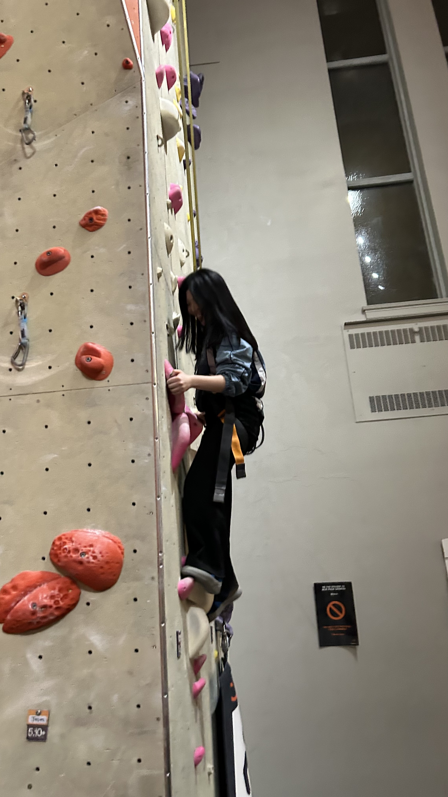

About me
I am Hyein Song, and I started the IMD program in the January 12th, 2026. I chose IMD because, through my experiences using many websites, I began to feel tired of sites that focus only on looking visually appealing without considering users. I previously majored in Interior Architecture Design in Korea, where I consistently analyzed how people use spaces and applied user behavior and functionality to my designs. Through this background, I came to see websites in the same way. While I once designed physical spaces for users, I am now interested in designing virtual spaces with the same user-centered approach.
Since I have only recently started studying IMD, I do not yet have a clear goal of whether I want to become a web designer or a web developer. However, based on the discomfort I have personally experienced while using the web, I want to create websites that are simple, clear, and easy for users to use. I believe that the most important aspects of UI/UX are user experience and usability. Because of this, I want to grow into someone who always considers users and carefully analyzes their needs when designing digital experiences.
Less is more.
— Ludwig Mies van der Rohe
This quote reflects my design philosophy because I believe that simplicity leads to better user experiences. In both design and development, removing unnecessary elements helps users focus on what truly matters. "Less is more" reminds me to prioritize clarity, usability, and user-centered thinking when designing digital experiences.
My Hobbies
- Photography
- Listening to music
- Watching movie
- Writing Blog